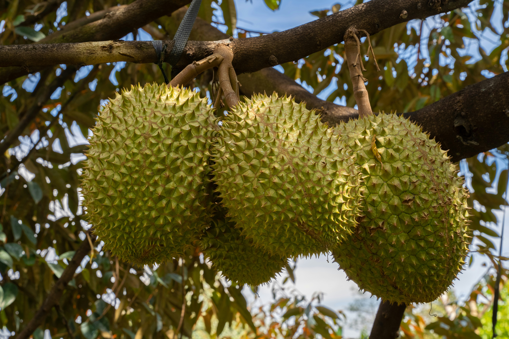
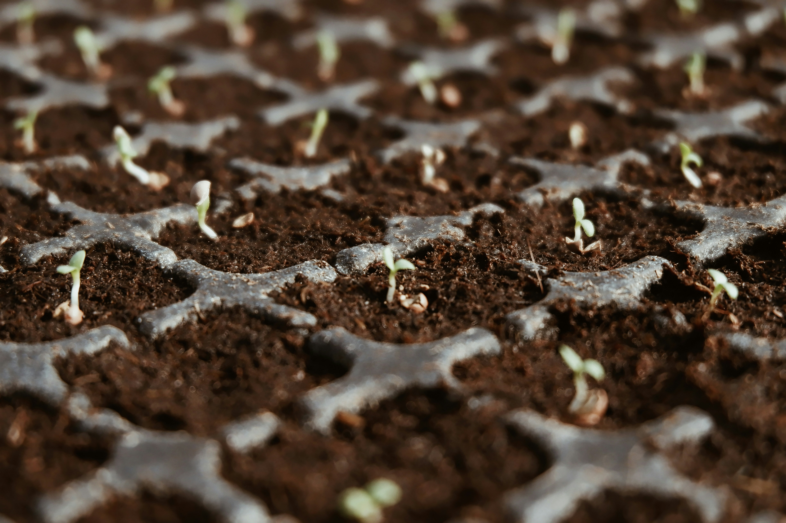
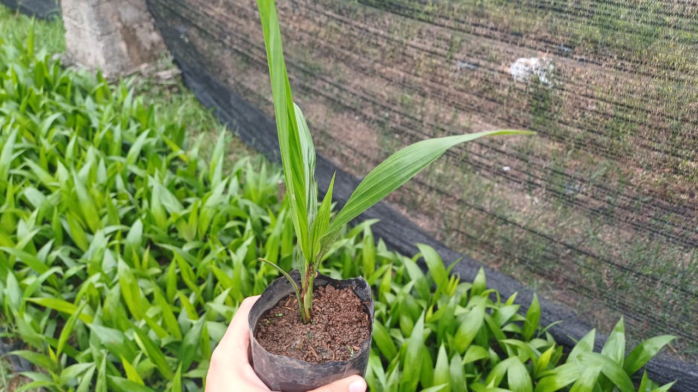

Stok Tersedia - Siap Kirim
Bibit Unggul Bersertifikat Untuk Hasil Panen Optimal
Menyediakan bibit perkebunan dan Hortikultura dengan daya tumbuh tinggi. Disertai pendampingan hingga siap Tanam

Bibit Buah
Durian, Alpukat, Mangga, Manggis
🌱 Siap Tanam
Lihat Detail →

Benih Hortikultura
Cabai, Tomat, Sayuran
🌱 Cepat Panen
Lihat Detail →

Bibit Perkebunan
Sawit, Kopi, Kakao
🌱 Produktif
Lihat Detail →
✓
Bibit resmi dan Bersertifikat
Lengkap label BPSB, lulus uji lab, dan QR traceable.
Lihat Sertifikasi →
Tentang CV Arya Tani
Berdiri Sejak 2016 • Lubuk Basung, Sumatera Barat
Berdiri sejak 2016, CV Arya Tani adalah penyedia bibit unggul bersertifikat yang berfokus mendukung produktivitas dan keberhasilan para petani. Dengan jaminan daya tumbuh tinggi dan kualitas varietas teruji, kami siap mendistribusikan benih terbaik ke seluruh wilayah untuk mewujudkan panen melimpah.
10+ Tahun Pengalaman
•
50.000/bulan Bibit Tersalurkan
•
95%+ Daya Tumbuh